Hyrje
Rrjeti i ujësjellësit paraqet një sistem të gypave, rezervuarëve, sistemeve të pompave, objekteve hidroteknike dhe pjesëve fazonike të lidhura mes vete me qëllim të furnizimit me ujë të vendbanimeve.
Qëllimet e furnizimit me ujë janë:
- Sigurimi i ujit të pijshëm për konsumatorët;
- Sigurimi i të paktën sasisë minimale për nevojat e konsumatorëve;
- Të sigurojë ujë të bollshëm për rastet emergjente, si psh zjarret;
- Sigurimi i ujit të bollshëm e cilësor për kërkesat e së ardhmes si pasojë e rritjes së popullsisë, rritjes së standardit jetësor etj.
Kushtet parësore që duhet t’i plotësojë sistemi i ujësjellësit
- Cilësia e ujit nuk duhet të përkeqësohet në gypat e shpërndarjes;
- Sistemi i furnizimit duhet të jetë në gjendje të furnizojë ujë në të gjitha vendet e synuara me presion të mjaftueshëm;
- Duhet të jetë në gjendje të furnizojë sasinë e nevojshme të ujit gjatë ndërhyrjes ndaj zjarreve;
- Skema e gypave duhet të jetë e tille që askush nuk të mbetet pa furnizim me ujë gjatë riparimit të ndonjë pjese të sistemit;
- Gypat e ujësjellësit duhet të vendosen minimumi një metër larg ose mbi linjat e kanalizimeve;
Llojet e sistemeve të furnizimit me ujë
- Sistemi i degëzuar (shpërndarë);
- Sistemi rrjetor
- Sistemi unazor dhe
- Sistemi radial
Sistemi i degëzuar i furnizimit me ujë
Në këtë lloj sistem shpërndarjeje të ujit, uji kalon nëpër një tubacion kryesor dhe shpërndahet nëpër gypat tjerë që lidhen anash tij.
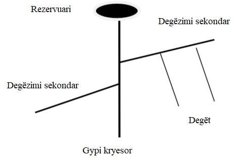Përparësitë e kësaj mënyre të shpërndarjes janë:
- Metodë e thjeshtë e shpërndarjes dhe lehtë bëhen llogaritjet e rrjetit;
- Dimensionet e gypave janë mjaft praktik dhe ekonomik;
- Kërkohen më pak valvula dhe pjesë fazonike.
Mangësitë e kësaj metode të shpërndarjes janë:
- Nëse ndodh një prishje e gypit furnizues atëher e gjithë zona mbetet pa ujë;
- Ka shumë pika skajore të vdekura ku nuk ka furnizim dhe aty uji grumbullohet dhe bëhet zhvillimi i bakterieve. Për ta zgjidhur këtë problem duhet bërë tharja e atyre gypave me ç’rast happen valvulat, mirëpo humbet shume ujë;
- Pasi që ekziston një gyp primar për furnizim, limitohet sasia e ujit në raste emergjente, si psh të zjarrit;
- Presioni në fund është i vogel, në rastet nëse shtohen pjesë të ndryshme në rrjet.
Sistemi rrjetor i furnizimit me ujë
Përparësitë e kësaj mënyre të shpërndarjes janë:
- Pasi që uji rrjedh në shumë drejtime dhe nuk ka funde të vdekura, nuk bëhet mbetja e ujit në një vend si në rrjetin e degëzuar;
- Në rast të ndonjë riparimi, ateherë zonat mund të furnizohen me ujë nga gypat tjerë;
- Uji arrin gjitha pikat duke humbur shumë pak shtypje;
- Në rast zjarri, atëher duke manipuluar me valvula, uji mund të koncentrohet dhe përdoret për fikjen e zjarrit.
Mangësitë e kësaj mënyre të shpërndarjes janë:
- Kostoja e gypave është mjaft e madhe për shkak të gjatësisë së madhe të gypave;
- Rritet numri i valvulave;
- Llogaritja hidraulike e gypave është më e ndërlikuar.
Sistemi unazor i furnizimit me ujë
Përparësitë e kësaj mënyre të shpërndarjes janë:
- Prurja është më e madhe në krahasim me metodat tjera të furnizimit me ujë;
- Më pak përdorues mbesin pa ujë në rast të dëmtimit të ndonjërit gyp të furnizimit me ujë.
Mangësitë e kësaj mënyre të shpërndarjes janë:
- Kostoja e gypave është mjaft e madhe për shkak të gjatësisë së madhe të gypave;
- Kërkohet numër i madh i valvulave dhe pjesëve tjera fazonike për kontrollimin e rrjedhjes.
Sistemi radial i furnizimit me ujë
Në këtë lloj sistem shpërndarjeje të ujit, bëhet ndarja në disa sipërfaqe të furnizimit me ujë. Çdo zonë ka një rezervuar të vendosur në qendër, nga ku tubacionet e shpërndarjes ndërtohen radialisht drejt periferisë së zonave të shpërndarjes. Ky sistem ofron shërbim të shpejtë, pa humbje të shumta të presionit. Sistemi i vendosjes së tubacioneve është shumë më i thjeshtë.
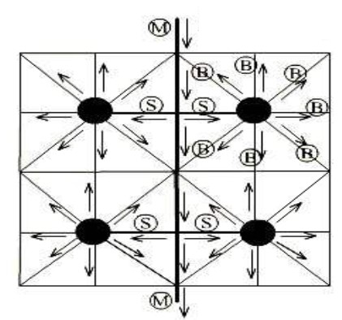Mënyrat e furnizimit me ujë
Në varësi nga topografia e terrenit dhe shtypja te furnizimi me ujë, atëherë furnizimi me ujë mund të realizohet në tri forma:
- Me gravitacion
- Me pompa
- Kombinim gravitacion - pompa
Furnizimi me gravitacion
Sistemi me gravitacion është shtypje natyrore në rrjetin e ujësjellësit. Deri te shpenzuesit, uji derdhet në mënyrë gravitacionale. Këto sisteme, më shpesh përfshijnë ujë nga burimet në largësi relative dhe lartësi më të madhe mbidetare se vendbanimi. Gjatë bartjes së ujit, shtypja në gyp në përçuesin kryesor nuk guxon të jetë më e madhe se 7-8 Bar.
Furnizimi me pompa
Ne sistemet kur shtypja në rrjetin e ujësjellësit krijohet në mënyrë artificiale, bëhet me ndihmën e pompave. Kjo mënyrë e furnizimit me ujë bëhet kur burimet e ujit më shpesh janë në të njëjtën lartësi mbidetare ose më ulët sesa shpenzuesit (vendbanimet) dhe largësia e bartjes është relativisht e vogël.
Para se të fillohet me projektimin e ujësjellësit, duhet të bëhet verifikimi i origjinës së ujit, sasisë dhe cilësisë së tij.
Pastaj duhet të bëhet inçizimi i terrenit për të përcaktuar largësinë dhe lartësinë në raport me shpenzuesit.
Mangësitë e furnizimit me pompa janë:
- Operim i ndërlikuar;
- Mirëmbajtje e kushtueshme;
- Varësia nga energjia elektrike.
Rezervuarët
Rezervuarët janë objekte që rregullojnë regjimin e punës së dy apo më shumë objekteve të ndryshme. Ata bëjnë rregullimin e prurjes, shtypjes dhe furnizojnë me ujë, vendbanimet në çdo kohë që është e nevojshme. Stacioni i pompimit lidhet me veprat e marrjes së ujit dhe ato të pastrimit. Sa më shumë orë të punës të ketë stacioni i pompimit, aq më e vogël do të jetë kostoja prej objekteve të marrjes së ujit dhe të pastrimit të tij. Për përcaktimin e vëllimit të rezervuarit, është me rëndësi të dihet regjimi i punës së pompave.
- Nëse kemi punë të njëjtrajtshme të pompës , nënkuptohet që pompa gjatë ditës do të jep 4.17% të prurjes maksimale ditore, për çdo orë. Në disa raste e shënojmë në tabelë vlerën 4.16 me qëllim të arritjes së vlerës 100%. Pra 24 * 4.17 = 100% (tabela 1).
- Nëse kemi punë jo të njëjtrajtshme të pompave, psh të dy pompave, atëherë një mënyrë e zgjidhjes do të ishte si në vijim:
Ndërsa prej orës 08-24 punojnë dy pompa që japin 16 * 5% = 80 % të prurjes ditore.
Pra 20 % +80 % = 100% të prurjes maksimale ditore.
Rast tjetër mund të jetë kur zgjedhim tri pompa me rendiment 2.5% të prurjes maksimale ditore. Pompa e parë punon prej orës 00-12 me rendiment 2.5% dhe kemi 12*2.5%=30% të prurjes maksimale ditore. Prej orës 12-17 dhe 21-24 punojnë dy pompa me rendiment 8*5%=40%. Vetëm prej orës 17-21 punojnë të tri pompat me rendiment 4*7.5% = 30%. Pra 40%+30%+30% = 100% (tabela 3). 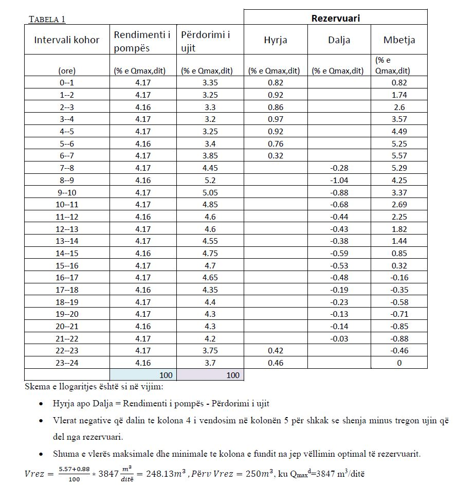 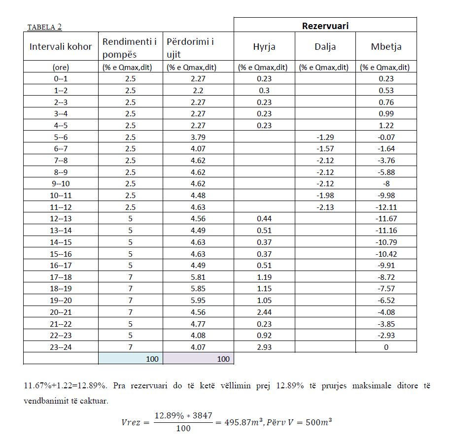 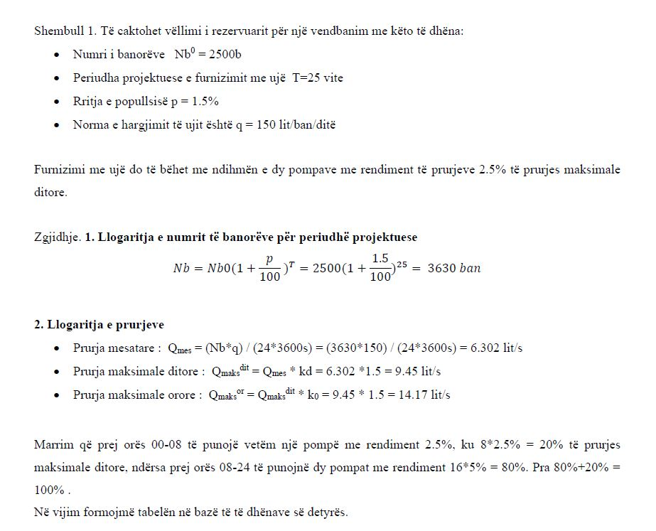 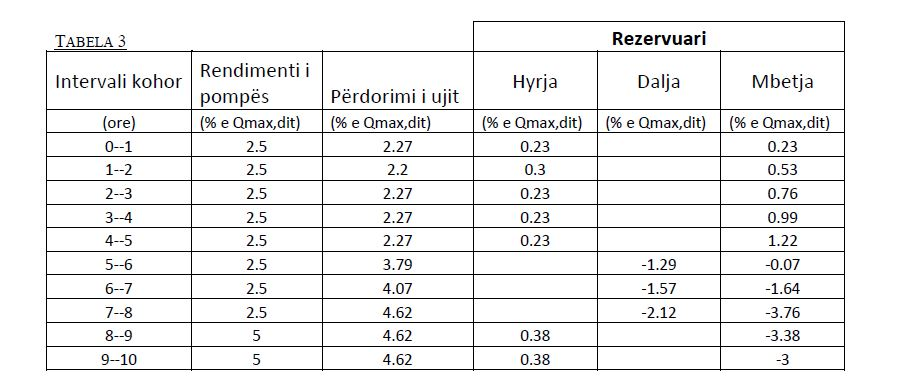 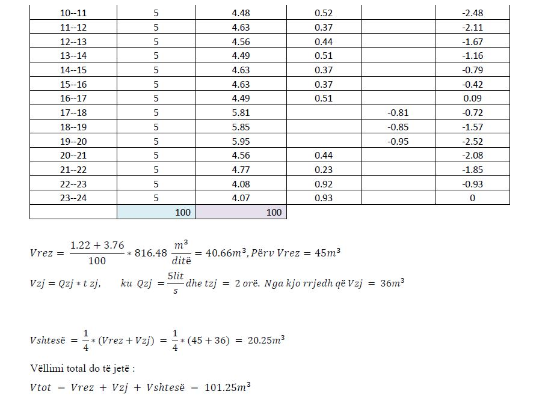
Skema e rezervuarit është dhënë në vijim:


Ekzistojnë shumë mënyra të furnizimit me ujë nga rezervuaret, ku në vijim janë paraqitur ato:
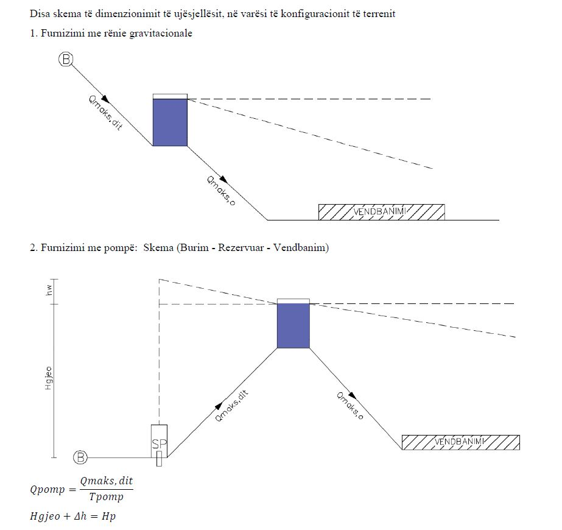 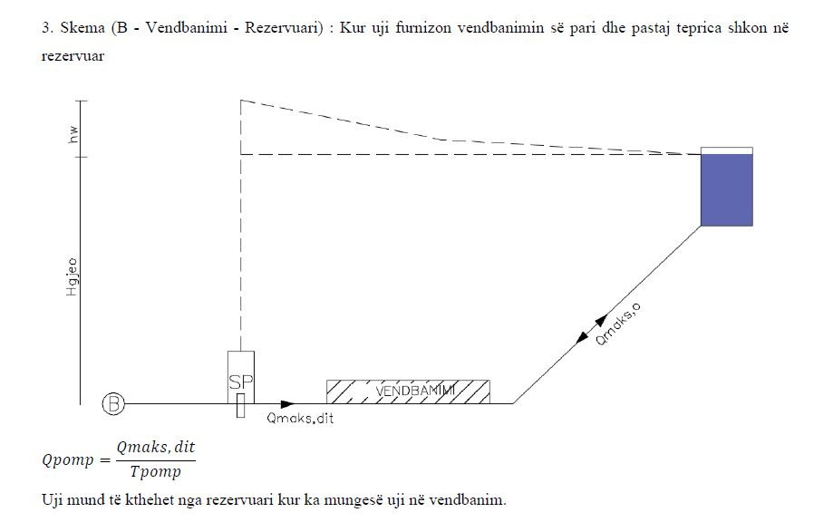 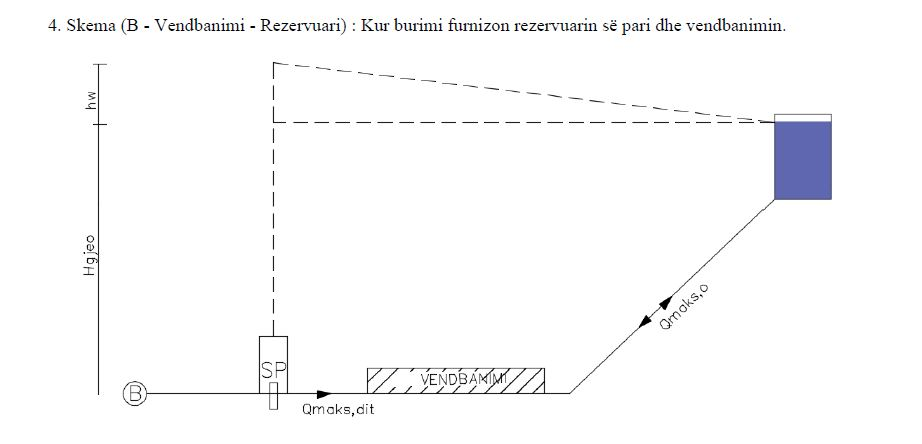 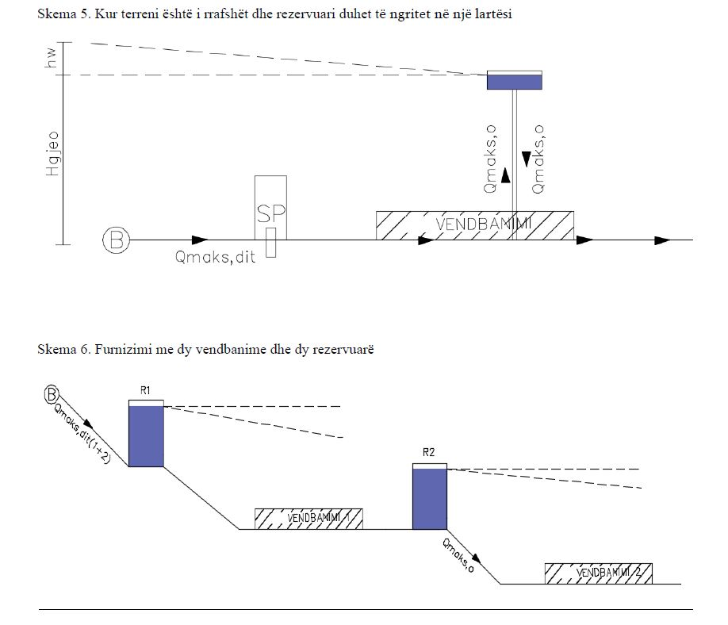 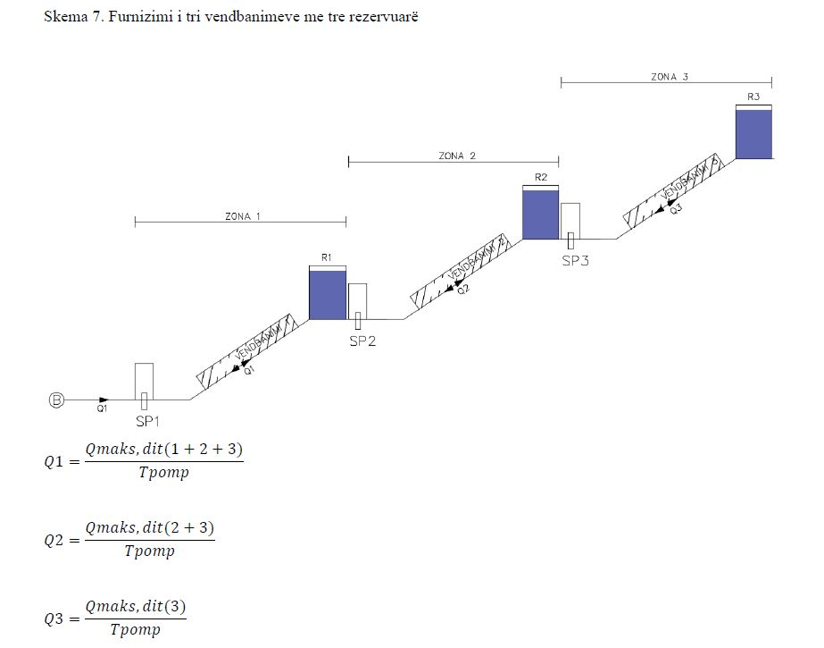.accordion-body, though the transition does limit overflow.